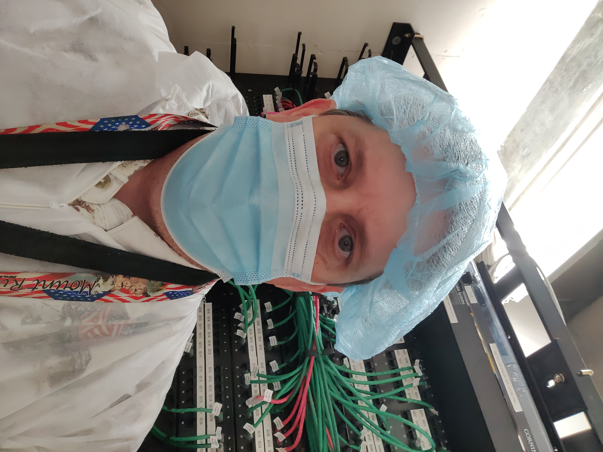

Scott Hall
Network Technician, Python Automater, Microcontroller Enthusist, Challenge Seeker
reddirt@duck.com
Work History
Ascension Health Systems (TEKSystems Contractor)
May 2021 - Present
Campus wide LAN refresh project including area clinics and community hospitals
- Replaced existing Cisco infrastructure with Extreme Networks
- Performed initial configuration and troubleshooting of configuration issues
- Responsible for Change Request submission, cut-over and short-term break/fix
- Routing protocol change from EIGRP to OSPF
- Server Top of Rack migrations
- Led the effort for server migrations of two datacenters
- Responsible for discovery process of physical and virtualized servers
- Applications and Application Owners
- Documenting cable connections
- Documentation of IP addresses and MAC addresses
- Configuration of Top of Rack Aggregation and Access switches
- Patient Monitoring (GE Biomed) migrations
- Led the effort for the migration of patient monitoring at six hospitals
- Discovery of all L2 devices
- Over 100 Cisco switches with 1500+ connections
- Conversion of Cisco configurations for migration to Extreme Networks switches
- Responsible for scheduling and migration
- Documentation of IDF/MDF's
- Identifying rack equipment
- Cable labeling
- Identification of unused switch ports
- Removal of unused cables
- Decommission and removal of Cisco infrastructure
- Wrote Python automations to help with migration work
ConocoPhillips (Bartlesville, OK) - Network Operation Center
2016 - 2021
Support and troubleshooting for the global network
- Coordinated with internal, wireless and field IT support, to restore infrastructure and service issues
- Terrestrial and oceanic facillities
- Documented issues, troubleshooting and resolutions using ServiceNow
- Initiated and managed bridges for major outages
- Created a PowerShell script for the Wireless Team to log into wireless field radios and performed requested tasks and retrieved status information.
ConocoPhillips (Bartlesville, OK) - Production Control
2011 - 2016
Proactively monitored Control-M (BMC) batch processing jobs
- Control-M is a data/production workflow orchestration application
- Provided global support and notification of any failed batch jobs
- Performed manual/on-demand batch job runs
- Created and wrote VBA code for long running processes
- Checked running batch processes for jobs exceeding normal run times
- Analyzed start time and current run time
- Compared to historical averages to identify processes that were running longer than typical
- Greatly reduced the time required to do so which had been performed manually, job by job
Verizon Business (Tulsa, OK) - Senior Telecommunications Technician
1998 - 2011
Private Line Repair/Support
- Testing and troubleshooting of point-to-point data and analog circuits ranging in bandwidth from 9.6 kb/s to 1.544 Mb/s
- Installed and activated equipment for remote access and telemetry at various U.S. locations
- Coordinated with field technicians and local service providers to restore service interruptions